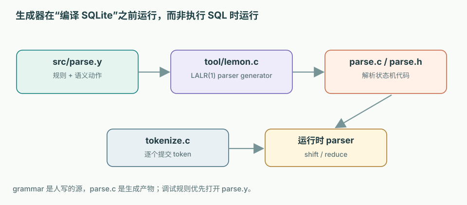
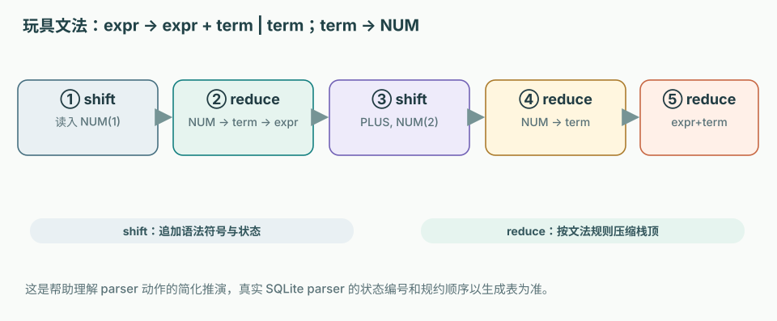
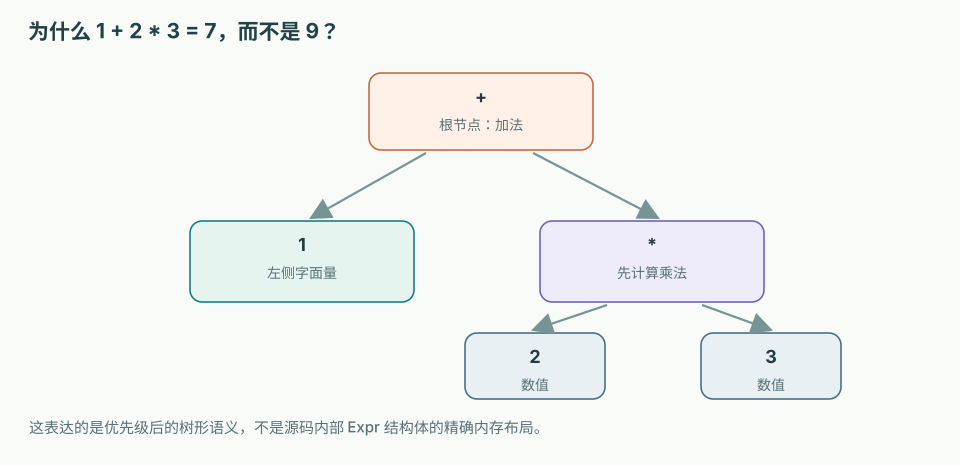

Lemon 解析器：从 Token 序列到 Shift / Reduce
Lemon 不是运行 SQL 的虚拟机，而是把 parse.y 编译成 C 状态机的生成工具。理解规则、解析栈、归约动作和 fallback，才能找到一条 SQL 为什么在这个位置被接受。
1. 为什么 tokenizer 产出的 Token 还不能直接执行？
Tokenizer 已经把输入 SELECT 1 + 2 * 3; 分成 SELECT、数字、运算符和结束符等 token。然而“有这些词”不等于“能组成合法的 SQL”。解释器需要根据 语法规则知道 SELECT 后需要什么表达式、加法和乘法如何结合，以及一串合法 token 何时组成更大的语法成分。
SQLite 用 Lemon 生成 LALR(1) 解析器。parse.y 写的是文法规则与 C 语义动作；Lemon 编译这些规则生成 parse.c/parse.h，随后与其他 SQLite 源文件一起构建。SQLite 运行时不会重新调用 Lemon 来处理每个 SQL 字符串。官方 Lemon 资料

2. parse.y 到底是什么语言？
Lemon 的规则由左侧非终结符、右侧词法或非终结符序列组成，基本形态为 lhs ::= rhs ... .；C action 写在规则后面的花括号中，执行条件是该规则被归约。规则中可以给语义值起名字，比基于位置的 $1、$$ 更容易检查。
/* Lemon 概念示例，不是 SQLite 官方 parse.y 的逐字摘录 */
%type expr {int}
%left PLUS.
%left TIMES.
expr(A) ::= INTEGER(X). { A = X; }
expr(A) ::= expr(B) PLUS expr(C). { A = B + C; }
expr(A) ::= expr(B) TIMES expr(C). { A = B * C; }这段只演示别名、规则和动作，不是可单独构建的完整 Lemon grammar。真实 SQLite 的 parse.y 会引用 Parse 编译上下文，利用特殊析构规则处理出错时的资源，规则动作可能同时进行结构创建、语义检查或触发代码生成。因此不能把真实 SQLite 想象成“等整棵 AST 完全生成后才开始所有代码生成”的单一两阶段算法。
学习时区分三个实体：parse.y 是输入规则；parse.c 是通过 Lemon 生成的状态机代码；Expr/Select/Parse 是 SQLite 编译过程里的语义对象。它们不是三个不同解析器。
3. Shift、Reduce 和状态栈究竟在干什么
简单起见，设玩具文法只有加法：term ::= NUM、expr ::= term、expr ::= expr PLUS term。当 parser 读取 1 + 2 的 token 序列，shift 表示把下一个输入 token/相关状态放到解析栈；reduce 表示发现栈顶符合某条规则，将若干符号合并成一个非终结符，并执行它的 action。

真正的 LALR(1) parser 还维护“状态”，它不仅看符号序列，还根据当前状态与一个 lookahead token 查生成的动作表，选择 shift、reduce、accept 或报错；有些分支由优先级解决冲突。不能直接把玩具教程输出的五个动作称作 SQLite 源码真实 trace。
4. 优先级为什么不是“算完乘法再算加法”的后期修补
SQL 的表达式优先级影响 parse tree 的结构。1 + 2 * 3 的正确组合是 1 + (2 * 3)，得到 7，而不是 (1+2)*3 得到 9。Lemon 允许在文法中声明运算符优先级/结合性，用于控制遇到潜在 shift/reduce 冲突时的选择。

但不能把“通用算术优先级示例”误写成 parse.y 所有规则的精确形态。SQLite 还有 IS、IN、BETWEEN、CASE、COLLATE 和 JSON 相关运算符等；其行为应以当前 SQL 表达式文档与对应源码为准。
-- examples/09_parser_semantics.sql
SELECT 1 + 2 * 3 AS result; -- 7
SELECT (1 + 2) * 3 AS result; -- 9
SELECT 10 - 3 - 2 AS result; -- 5，左结合
SELECT 1 + 2 * 3 = 7 AS is_seven; -- 1这些 SQL 只验证表达式语义；它们不能直接证明 SQLite 在内核中执行了某个固定编号的 reduce。
5. Fallback、错误恢复与析构器为何必要
SQL 的关键字常与应用想要使用的标识符冲突。Lemon 的 %fallback 机制允许某些 token 在特定 parser 状态中按标识符处理，这是语法兼容性策略，不是词法层“忽略所有关键字”。
另一个重要设计是非终结符析构器（destructor）：如果解析中途失败，先前构造的语义值可能持有动态内存；解析栈清理需要调用文法中的对应规则释放资源，否则长时间运行的嵌入式应用会累积泄漏。官方 Lemon 说明将可重入与 destructor 列为其关键特性。
| 内部机制 | 读源码时观察什么 | 常见错误理解 |
|---|---|---|
%fallback | 哪些 token 可回退以及生效状态 | 所有关键词都能被当作列名 |
| 优先级声明 | 语法冲突怎样被消解 | 运行完 SQL 后再重新调整顺序 |
| Destructor | 非法输入时如何回收语义值 | 解析失败只需 free(parser) |
| Parse 上下文 | 归约动作在哪儿生成结构和指令 | parser 自身等同完整虚拟机 |
若要追 SELECT FROM t; 的失败，先找到 token 和文法状态如何无法匹配，再追错误处理和清理；不要在没有证据的情况下指认“某个唯一固定的状态编号”。
6. 自己推演一次归约，再与真实 SQLite 做区分
仓库新增 examples/09_toy_reduce.py。它是有意缩小语言的教学模型，只接受形式为数字加法链的输入（如 1+2+3），并打印自己模拟的 shift/reduce 步骤；它不是 Lemon，也不能接受全部 SQL 文法。
python3 examples/09_toy_reduce.py
# 预期终值：6
# 预期输出包含 shift NUM、reduce NUM→term、reduce expr + term再运行前一节的 SQLite SQL，确认 SQL 实际运算语义。两项测试分别回答不同问题：一个观察玩具归约机制，一个在真实 SQLite 中验证表达式值。
版本化源码对照任务
- 在同一源码检出找到
src/parse.y、tool/lemon.c和构建生成的parse.c； - 选一个简单规则，指出非终结符别名与 C action；
- 定位一处
%fallback或 destructor 声明； - 比较玩具推演与 SQLite 本身的语义结果，并明确它们不是同一种状态 trace。
自测：Lemon 是在用户每次执行 SELECT 时运行的吗？
不是。Lemon 在构建 SQLite 的时候从语法规则生成 C parser；用户 prepare SQL 时执行的是已经编译好的 parser 代码。
下一章研究 parser 的语义结构如何转成 VDBE 指令，以及为什么类型转换、IN 和 CASE 需要特殊处理。
来源与版本边界
文法生成、解析栈和代码生成属于内部实现；重构示意图与玩具 parser 只提供心智模型，不能当作某个 SQLite 发布版本的真实状态编号或栈快照。
- The Lemon LALR(1) Parser Generator · SQLite 官方原始资料
- Architecture of SQLite · SQLite 官方原始资料
- The original Lemon Manual · SQLite 官方原始资料
- SQL Language Expressions · SQLite 官方原始资料
- SQL Syntax Diagrams · SQLite 官方原始资料